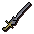

")
Controls - The Grand Exchange
Introduction | The Basics | Selling Items | Buying Items | Item Sets | Trade History | RuneScape Game Bar | FAQ
Introduction
The Grand Exchange is available to both members and free players, and can be accessed on any world. Please be aware that all trades completed through the Grand Exchange are final! You cannot undo any trade.
Click here to visit the Grand Exchange Database.


You can find the Grand Exchange in the north-west of Varrock. Varrock is an easy city to find, and is one of the first places new players visit.
Getting Started
 Before you can use the Grand Exchange, you will need to go through a tutorial. You can receive one by speaking to either the Grand Exchange Tutor or Brugsen Bursen, both of whom can be found in the south of the Grand Exchange.
Before you can use the Grand Exchange, you will need to go through a tutorial. You can receive one by speaking to either the Grand Exchange Tutor or Brugsen Bursen, both of whom can be found in the south of the Grand Exchange.
Brugsen Bursen (pictured to the right), the founder of the Grand Exchange, can give you a longer, more interesting tutorial. He can also explain the history of the Grand Exchange.
The Grand Exchange Tutor will provide a brief, concise tutorial.
Around the edge of the Grand Exchange are a number of other people, each of whom is an expert in trading specific goods. You can speak to these people or Brugsen Bursen who can give you information about the current market price of certain items. As the prices of these items will change over time, it's a good idea to check with them regularly to figure out how much their prices fluctuate. These people are marked on the minimap in the following way:
| Hofuthand - Weapons and Armour Hofuthand the dwarf is an expert in armour and weapons. He can tell you the prices of individual items or complete sets of armour. |
|
| Bob Barter - Herbs Bob has come all the way from Ardougne to buy and sell herbs. He can tell you the prices of many tradeable cleaned herbs. |
|
| Relobo Blinyo - Logs Hailing from Shilo Village, Relobo uses his people's extensive knowledge of trees to track the prices of common logs, which he is more than happy to share with you. |
|
| Farid Morrisane - Ores Farid is the son of the infamous Ali Morrisane of Al Kharid. His specialty is ores, and you'll be hard-pressed to find a more knowledgeable man or boy. |
|
| Murky Matt - Runes Even pirates are interested in trade, and Murky Matt's dealings with the mages of Lunar Isle has left him with a hefty stash of runes. He can tell you all about the state of the rune market (including essence). |
The Basics of the Grand Exchange
At its core, the Grand Exchange is a very simple system, and you can buy or sell items using the following steps:
- Bring items you wish to sell or money to buy items.
- Speak to one of the Grand Exchange clerks to either put items up for sale or to make a bid to buy items.
- The clerks will take your items or money and look for a matching bid/sale to match you up with.
- You may have to wait for your bid to be accepted or for the clerks to find a buyer - then again, it could happen in moments!
- You will receive a message when the trade has been completed, and you can go to the Grand Exchange or any bank to pick up your purchases or money.
Because the Grand Exchange never closes, the clerks will try to find you a buyer or seller constantly - you don't need to be logged in or on the same world as the player they match you up with. You don't even have to be at the Grand Exchange or in a bank: you can go off and work on your skills, play through a quest or anything else you enjoy doing, and just wait for the message from the Grand Exchange!
You cannot buy or sell untradeable items using the Grand Exchange and there is a small handful of tradeable items that cannot be bought or sold on the Grand Exchange.
All of the trades that the Grand Exchange manages are between players. No items are ever made or destroyed by this system - they are simply transferred from player to player. Your offer to buy or sell will, therefore, only be completed if the Grand Exchange clerks can find another player to match your trade with. You will not know who you have bought items from or sold them to, but you will always get a good deal regardless.
The way the Grand Exchange works is explained more completely in the following sections.
Selling Items

This display shows whether or not you have any buy or sell offers currently in the Grand Exchange. Members can have up to six combined buy and sell offers running at any one time, while free players can only have two running. In this example, the player has no offers active.
 You can then click on the 'sell' icon (shown to the left) to put an item up for sale. You must have that item or stack of items (you can use bank notes to sell large quantities) in your inventory. Each type of item you wish to sell will take up one of your offer slots.
You can then click on the 'sell' icon (shown to the left) to put an item up for sale. You must have that item or stack of items (you can use bank notes to sell large quantities) in your inventory. Each type of item you wish to sell will take up one of your offer slots.

You can choose to increase or decrease the quantity you wish to sell by using the buttons underneath the 'Quantity' box, or the + and - buttons to either side. The button marked '...' allows you to type in the exact number you wish to sell. Clicking the numbered buttons will change it to that number. If you wanted to sell one hundred, for instance, you can simply click the '100' button. If you change the number you want to sell, but then decide you want to sell all of them anyway, you can put all of them back in by clicking the 'ALL' button.
You can see that the price of the item is automatically set as the current market price (this value may change over time as the item sells for more or less, as detailed below). You can choose to raise or lower this by using the + and - buttons to either side of the price, clicking on the arrow buttons to set it to the minimum or maximum (usually 5% either side of the market value), or by clicking the '...' button to set the exact price manually.
 |
 |
 |
 |
 |
 |
| Reduce quantity/price by one coin | Increase quantity/price by one coin | Set price to minimum | Set price to market value | Set price to maximum | Set price manually |
When you are happy with the price and quantity, you can click 'Confirm Offer' and wait for the results. If you change your mind, you can click the arrow in the bottom-left to go back to the exchange summary.
When your items sell, they may sell in chunks. In the above example, it is possible that the Grand Exchange will sell 200 diamonds to one player, 50 to another and so on. In this way, it might take some time to sell larger quantities. On the plus side, when your items sell you will always get at least the price you ask for - the downside of this is that if you set the price too high they may not sell at all.
When the Grand Exchange sells some of your items, you will be sent a message. You can go to the Grand Exchange or any bank (right-click a banker and select 'Collect' to access your Grand Exchange collection box) to check up on this and collect your cash. You can see how far along your offers are by checking the progress bar beneath each offer. Click here to read more about banks and your collection box.
You can then go to the Grand Exchange or any bank to collect your money.
You can keep track of your items for sale by chatting to the Grand Exchange clerks or right-clicking them and selecting 'Exchange'. This will bring up your exchange summary, where you can click on an offer to see its progress.
You can click on the coins in the bottom-right of the summary interface to collect your cash.
You can abort an offer at any time by chatting to a Grand Exchange clerk or right-clicking on them and selecting 'Exchange'. If you then click on the offer you wish to cancel, you can click on the red button at the bottom-right of the interface. If you have already sold some items in that offer, you will be able to collect your cash.
There are some cases in which an offer will not complete; you can click here to find out why this might be.
Buying Items
Buying items at the Grand Exchange is a very simple process that allows you to purchase items quickly and without hassle. To start buying, either talk to a Grand Exchange clerk or right-click on them and select 'Exchange'.


You will then be shown the interface to the right.
In this window, you will see a flashing box with a magnifying glass, which will show the item you are looking to purchase when you have selected it. You will also see an interface in your chat box. This interface lets you type in the name of an item to make an offer on.
To begin searching for items, simply begin typing the name. As you type, a list of items will appear for you to choose from:

|
|
|
|
|
|
| Reduce quantity/price by one coin | Increase quantity/price by one coin | Set price to minimum | Set price to market value | Set price to maximum | Set price manually |
The Grand Exchange will always try to find you a good price, and it may cost you less than you have offered. You may end up buying from a number of players at different prices, but they will never cost more than you have offered per item.

When the Grand Exchange finds some of the items for you, you will be sent a message exactly as you would if you had sold an item. You can go to the Grand Exchange or any bank (right-click a banker and select 'Collect' to access your Grand Exchange collection box) to check up on this and collect your new property. You can see how far along your offers are by checking the progress bar beneath each offer. Click here to read more about banks and your collection box.
You can abort an offer at any time by chatting to a Grand Exchange clerk or right-clicking on them and selecting 'Exchange'. If you then click on the offer you wish to cancel, you can click on the red button at the bottom-right of the interface. If you have already bought some items in that offer, you will be able to collect them.
There are some cases in which an offer will not complete; you can click here to find out why this might be.
Item Sets
 Some items, typically armour, can be converted into a single item 'set' to make it easier to purchase or sell them as a whole, rather than having to wait for someone buying or selling each separate part. There is no charge for converting armour into sets. This also has the advantage that you can then sell the whole set and only use one of your trading 'slots'. To convert armour into a set, talk to a Grand Exchange clerk.
Some items, typically armour, can be converted into a single item 'set' to make it easier to purchase or sell them as a whole, rather than having to wait for someone buying or selling each separate part. There is no charge for converting armour into sets. This also has the advantage that you can then sell the whole set and only use one of your trading 'slots'. To convert armour into a set, talk to a Grand Exchange clerk.
You can convert a set back into its parts (so you can use it!) in the same way.
Beware! Right-clicking a set and choosing 'Destroy' will not convert it back into its parts. You must talk to a Grand Exchange clerk to change a set into useable armour.
Not all armour can be combined into sets, and you must have all of the items required in your inventory, so you should check the following list before trying to exchange your armour into a set:
 |
Normal metal armour sets (bronze, iron, steel, black, mithril, adamant, rune): Platebody, full helm, kite shield, platelegs/plateskirt (the set is marked with (l) or (sk) to indicate which). |
 |
Dragon armour sets: Chainbody, medium helm, platelegs/plateskirt (the set is marked with (l) or (sk) to indicate which). |
 |
Barrows armour sets* (Ahrim, Dharok, Guthan, Karil, Torag, Verac): Body, legs, head, weapon. |
 |
Third Age melee armour set: Platebody, full helm, kiteshield, platelegs. |
 |
Trimmed and gold-trimmed armour sets (black, adamant, rune): Platebody, full helm, kite shield, platelegs/plateskirt (the set is marked with (l) or (sk) to indicate which). |
 |
Gilded armour sets: Platebody, full helm, kite shield, platelegs/plateskirt (the set is marked with (l) or (sk) to indicate which). |
 |
God armour sets (Guthix, Saradomin, Zamorak): Platebody, full helm, kite shield, platelegs/plateskirt (the set is marked with (l) or (sk) to indicate which). |
 |
Dagannoth armour sets (rockshell, spined, skeletal): Helm, platebody/body/top, legs/chaps/bottoms. |
 |
Dragonhide armour sets (green, blue, red, black): Body, chaps, vambraces. |
 |
Blessed dragonhide armour sets (Guthix, Saradomin, Zamorak): Body, coif, chaps, bracers. |
 |
Third Age ranger armour set: Coif, body, chaps, vambraces. |
 |
Trimmed and gold-trimmed dragonhide armour sets (green, blue): Body, chaps. |
 |
Mystic robes sets (normal, dark, light): Hat, top, bottoms, gloves, boots. |
 |
Infinity robe sets: Hat, top, bottoms, gloves, boots. |
 |
Splitbark armour sets: Helm, body, boots, gauntlets, legs. |
 |
Third Age mage sets: Body, legs, amulet, hat. |
 |
Enchanted robe sets: Hat, robetop, bottoms. |
 |
Trimmed and gold-trimmed wizard sets: Hat, robetop, bottoms. |
 |
Dwarf cannon sets: Cannon base, stand, barrels, furnace. |
* Barrows armour sets can only be made from undamaged armour.
Your Trade History

This shows your last five trades: the type of offer (bought or sold), the item, the quantity, and the price (what you paid or won). Trades will only show up in this interface if you have collected your items and/or cash - this will include trades you have aborted.
A player with a good knowledge of the current prices of items and how their trade history has worked out will be able to make the greatest profits at the Grand Exchange.
The RuneScape Game Bar
It is possible to keep track of your Grand Exchange offers when logged out of RuneScape by downloading the RuneScape Game Bar. This keeps you up-to-date with every sale or purchase that is made from your Grand Exchange account, as well as offering you an RSS feed of RuneScape news, links to useful RuneScape pages, and a search bar for the Knowledge Base.
To download the RuneScape Game Bar, click here. To find out more about the RuneScape Game Bar click here.
The Grand Exchange element of the Game Bar will automatically update every 10 minutes. You may manually refresh the toolbar by clicking 'Refresh Toolbar' from the RuneScape dropdown menu.
FAQ
What affects the price of items?
As you buy and sell, you'll probably notice that items have a tendency to change price. This is based on how much value players put on those items. If an item is hard to get and very useful, you'll probably see its price increase, as buyers are willing to pay more to make sure they get some, and sellers set the selling price higher than the average.
This is also true of common, less useful items, which may decrease in value.
This is called the Law of Supply and Demand.
- If an item is in high demand with low supply, the price will increase.
- If an item is in low demand with high supply, the price will decrease.
- If the demand for an item is matched by its supply, the price will remain fairly constant.
Because you can normally only bid 5% above or below the average price of an item, you'll find that there is little risk of an item's price plummeting or skyrocketing too rapidly. This makes it harder for players to manipulate prices and ensures that everyone gets a fair deal.
Prices are entirely set by players trading! There is no 'set value' that prices are based on, with the exception that a price will never rise above a shop's main stock price, or fall below the price a shop will pay for it. Note that shops will adjust their prices according to the Grand Exchange, so it is extraordinarily difficult to make a quick profit by buying from the shops and selling on the Grand Exchange and vice versa.
The prices items sell at are therefore not set by Jagex but by the players themselves! We are keen to keep a player-driven economy, so the prices are worked out using the supply and demand rules above. We will only intervene as a last resort, and only if we think price manipulation is going on, although the system has lots of safeguards to prevent that.
The market value of an item is automatically recalculated roughly once per day.
Are there any restrictions on how much I can offer or charge for an item?
When you put an item up for sale or make an offer on one, you'll recall that the screen shows you a range of prices. For example, buying or selling cut diamonds might show us this:
 The market price is shown at the bottom, while the two numbers above it are the minimum and maximum you can buy or sell it for. These values are set as a percentage above and below the market price. As noted earlier, if the item consistently sells above the market price, then the price will adjust to match it; the same is true if the item consistently sells below the market price - the market price will decrease.
The market price is shown at the bottom, while the two numbers above it are the minimum and maximum you can buy or sell it for. These values are set as a percentage above and below the market price. As noted earlier, if the item consistently sells above the market price, then the price will adjust to match it; the same is true if the item consistently sells below the market price - the market price will decrease.
In this way, the market price listed will always adjust to match the average that the item is selling for.
Other than this price-range, there is no restriction on what you can offer for an item - if you have some items you want to make money on, it may well be worth putting them up and asking for the maximum (or offering the minimum on an item). This isn't scamming, as many players will either offer an item very cheaply or offer to buy at the maximum simply because they want a quick sale. It could be great way to make money!
Why isn't my offer completing?
There are several reasons why an offer may not complete:
- You are asking too much (when selling) or offering too little (when buying).
- If your offer has been in the system for a while, you may find that the prices have changed and your offer no longer falls into the price range for the items you are selling/buying. To prevent these trades unbalancing the market value of items, they will not be completed.
- No one is interested in selling/buying the items!
- If you have just bought/sold an item, you will not be able to sell/buy that item for a period of time. If we allowed this, it would be far too easy for someone to manipulate prices and prevent the economy from being stable.
Does the market value affect an item's alchemy value?
No. The alchemy value of an item has a separate, static value and is unaffected by trading at the Grand Exchange. Equally, the value of items that you keep on death is calculated using the alchemy value rather than the market value.
 |
 |
 |
 |
 |
 |
With all that said, get out there and make some profit at the Grand Exchange!

|
More articles in Controls
|
|
|
Further Help
If this article does not help you, you may find the following sections of the RuneScape site helpful:
|
|